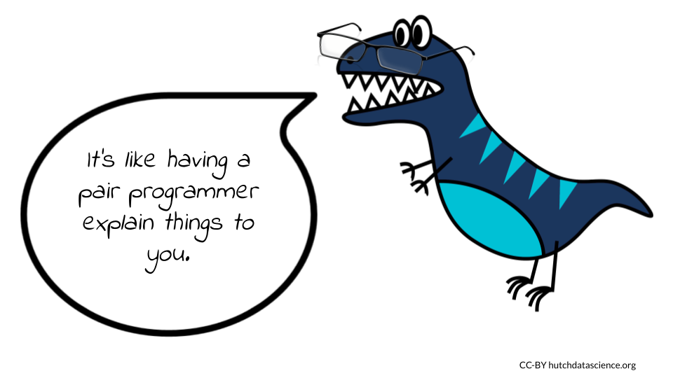

Chapter 5 Understanding Unfamiliar Code
As a programmer, you will frequently encounter situations where you need to read and understand code written by other developers. This could be because you are collaborating on a project, you have taken over maintenance of an existing codebase, or you are learning new syntax or skills that require reading example codes. Comprehending code written by someone else is a distinct skill from being able to write your own code, and it takes practice to become proficient at it.
Reading unfamiliar code is like exploring an unfamiliar city without a map or a guide. Just like in a new city, you may not know where to start or how to navigate the codebase. You may encounter unfamiliar syntax, functions, and libraries that you have never seen before, just as you might encounter new streets, buildings, and landmarks. At first, you may feel disoriented and overwhelmed, and may need to spend some time getting oriented and familiarizing yourself with the environment. As you explore, you may start to see patterns and similarities, just as you might begin to recognize neighborhoods and landmarks in a new city. You may also encounter dead-ends, confusing intersections, and unexpected detours, just as you might encounter bugs and errors in the code.
To make progress in this unfamiliar territory, you may need to rely on a combination of intuition, deduction, and experimentation. You may need to break down the code into smaller pieces, analyze the behavior of each piece, and gradually build up a mental model of how the code works. You may also need to consult documentation, online resources, or other experts who are familiar with the codebase, just as you might ask locals or consult a map in a new city.
In the end, with patience, persistence, and a willingness to learn, you can successfully navigate the unfamiliar code and achieve your goals, just as you can successfully explore a new city and discover its hidden treasures. Learning how to read and understand code written by someone else is a valuable skill that can help you be a more effective programmer. By being able to read and comprehend unfamiliar code, you can contribute to projects more quickly, diagnose and fix bugs more effectively, and learn new programming techniques and best practices. As with any skill, the more you practice reading and understanding code written by others, the more comfortable and proficient you will become at it.
5.1 Using AI to understand code

While anyone can learn to understand code written by someone else, using AI language models to achieve this has three significant advantages.
Summarize large codebases. AI can quickly scan large codebases and give you a high-level overview of what they do. This can save you a lot of time and effort, especially when dealing with complex codebases. For example, AI can identify the main functions and classes in a codebase, and it can show you how they are related.
Analyze the code. AI can look at the code and tell you about its structure, complexity, and potential defects quickly and efficiently. This can help you understand the code better and make it easier to maintain and improve. For example, AI can identify parts of the code that are difficult to understand or maintain, and it can suggest ways to improve the code.
Understand comments and documentation. AI can read comments and documentation written by other developers. This can help you understand the code’s purpose and the assumptions and limitations of the codebase. For example, AI can identify the key assumptions that are made in the code, and it can explain the trade-offs that were made in the design of the code.
Keep these ethical considerations in mind when using AI to summarize code.
Who owns the code? If you are not the owner of the code, you should get permission from the owner before summarizing it.
What is the purpose of the summary? If you are summarizing the code for educational or research purposes, it is likely ethical to do so. However, if you are summarizing the code for commercial purposes, you may need to get permission from the owner.
Does the code contain any sensitive or personal information? If the code contains any sensitive or personal information, you should take special care to protect that information.
5.2 Example One: Summarizing Code You Didn’t Write
Here’s some simple code using the R programming language, written by an unnamed programmer. If you are familiar with R, you might be able to understand what this code does with little effort. However, if you don’t know R, you’re relatively new to R, or you’re just having a bad day, understanding what this bit of code can take a great deal more energy and time. AI language bots can ease that burden.
library(tidyverse)
d <- ggplot2::diamonds
d_sel <- d %>%
select(carat, cut, color, clarity, depth, table, price)
d_fil <- d_sel %>%
filter(price > 5000)
d_bin <- d_fil %>%
mutate(carat_bins = cut_width(carat, width = 0.2))
d_summ <- d_bin %>%
group_by(carat_bins, cut, color, clarity) %>%
summarize(mean_price = mean(price), sd_price = sd(price))We first ask Claude-instant (as implemented by Poe) to explain the purpose of this code.
“What does this code do?”

You can ask for Claude to summarize each step in detail as well.
“Can you explain what each step does in detail?”
![The output from Claude explains what each step of the code does. First it loads the tidyverse collection of packages, then imports the diamonds dataset from ggplot2. After that, it selects columns from diamonds: carat, cut, color, clarity, depth, table and price and stores the result in d_sel, then filters d_sel to only keep rows where price is greater than 5000 and stores the result in d_fil. Next it uses mutate() to create a new column carat_bins which bins the carat column into 0.2 width bins and stores the result in d_bin, then uses group_by() to group d_bin by carat_bins, cut, color and clarity. Finally it uses summarize() to calculate the mean and standard deviation of price for each group and stores the result in d_summ.](06-understanding_other_ppl_code_files/figure-html/1MCNeSO4aOm1iESWDLOGTcx3aLEbnu8UttV0QGVAeafE_g22e0106807c_0_5.png "The output from Claude explains what each step of the code does. First it loads the tidyverse collection of packages, then imports the diamonds dataset from ggplot2. After that, it selects columns from diamonds: carat, cut, color, clarity, depth, table and price and stores the result in d_sel, then filters d_sel to only keep rows where price is greater than 5000 and stores the result in d_fil. Next it uses mutate() to create a new column carat_bins which bins the carat column into 0.2 width bins and stores the result in d_bin, then uses group_by() to group d_bin by carat_bins, cut, color and clarity. Finally it uses summarize() to calculate the mean and standard deviation of price for each group and stores the result in d_summ.")
Maybe you’ve never worked with the tidyverse package in R - Claude can tell you about it.
“What is the tidyverse package?”

You might also not be familiar with the diamonds dataset (especially if you’ve never used it before) and want some clarification on where the data are from.
“Can you tell me more about the diamonds dataset?”
5.3 Example Two: Identifying a Coding Language
Sometimes you might have to work with legacy code. Legacy code can be difficult to work with, especially if it is written in a language or style with which you are not familiar. There are more than 700 programming languages in use today, so it is impossible for any programmer to know them all. AI can be a helpful tool for identifying the language and version of legacy code, which can make your life just a little easier.
Let’s look at example code that might have been written decades ago.
program temperature_smog_analysis;
uses
Math;
const
n_temperatures = 1000;
n_smog_measures = 500;
type
TemperatureArray = array[0..n_temperatures-1] of integer;
SmogArray = array[0..n_smog_measures-1] of integer;
var
temperatures: TemperatureArray;
smog_measures: SmogArray;
combined_data: array of integer;
slope, y_intercept: double;
i, j: integer;
function connect_to_database(filename: string): integer;
begin
{ implementation of connect_to_database function }
end;
function retrieve_temperatures(fd: integer): integer;
begin
{ implementation of retrieve_temperatures function }
end;
function retrieve_smog_measures(fd: integer): integer;
begin
{ implementation of retrieve_smog_measures function }
end;
function retrieve_temperature(fd, index: integer): integer;
begin
{ implementation of retrieve_temperature function }
end;
function retrieve_smog_measure(fd, index: integer): integer;
begin
{ implementation of retrieve_smog_measure function }
end;
procedure close_database(fd: integer);
begin
{ implementation of close_database function }
end;We can ask Bard to take a guess at what the coding language might be.
“What language is this code written in?”

We can explore further to figure out what indicators tell Bard the language is Pascal.
“How do you know this is Pascal?”

It turns out there are multiple versions of Pascal. Since you will presumably need to work with this legacy code, you might want to know which version it is.
“What version of Pascal is this?”

5.4 Example Three: Interpreting Regex
Regex (short for Regular Expressions) is a powerful tool used to describe patterns in text. It’s a sequence of characters that define a search pattern. Regular expressions can be a powerful tool for data cleaning, text mining, and data validation. They are widely used in web development, data science, and other fields where text processing is important. They can also be tricky to understand at first because they involve a specific syntax that can be complex.
We can use ChatGPT to explain regex in a bit of someone else’s code.
x = sub("/d/e","/d",x)“What does this do?”

5.5 Example Four: Demystifying Functions
Sometimes we get handed code that includes complex architecture. Perhaps you are working with code you wrote years ago when you really liked loops, but present you finds them difficult to parse. (Be nice to past you - maybe you were a baby programmer and didn’t know better.) Instead of giving yourself a headache, you could turn to ChatGPT to explain what your old code does.
def my_function(x):
result = x
for i in range(10):
for j in range(5):
result = result + 2 * (i + 1) * (j + 1) * (i % 2 == 0 and j % 2 == 0) - 1
return result“What does this function do?”
Well, now you have an idea what past-you might have been attempting to do with this code. You can also query AI about the potential problems from using the code as-written.
“What are some possible issues with this code?”

(And if you do ever run across an expression like this in your code, you can check out our chapter on refactoring code using AI to fix it!)
5.6 Example Five: Deciphering Comments
5.7 Hands-On Exercise [WORK IN PROGRESS]
Now it’s your turn to try. Let’s say you were handed this bit of code to work with (and eventually modify), but first you need to figure out what’s going on with it. Unfortunately, the original programmer left very little in the way of notes or annotation.
Note: This code is just an example and was written strictly for educational purposes.
use ode_solvers::{Euler, OdeMethod};
use plotters::prelude::*;
use std::fs::File;
const N: f64 = 1000000.0;
const I0: f64 = 10.0;
const R0: f64 = 0.0;
const S0: f64 = N - I0 - R0;
const BETA: f64 = 0.3;
const GAMMA: f64 = 0.1;
fn sir_model(t: f64, y: &[f64], v: f64) -> Vec<f64> {
let s = y[0];
let i = y[1];
let r = y[2];
let dsdt = -BETA * s * i / N - v * s;
let didt = BETA * s * i / N - GAMMA * i;
let drdt = GAMMA * i + v * s;
vec![dsdt, didt, drdt]
}
fn main() {
let mut solver = Euler::new(sir_model);
solver.set_initial_condition(&[S0, I0, R0]);
let root = BitMapBackend::new("sir_vaccination.png", (800, 600)).into_drawing_area();
root.fill(&WHITE).unwrap();
let mut chart = ChartBuilder::on(&root)
.caption("SIR model with vaccination", ("sans-serif", 40))
.set_label_area_size(LabelAreaPosition::Left, 60)
.set_label_area_size(LabelAreaPosition::Bottom, 40)
.build_cartesian_2d(0.0..100.0, 0.0..N)
.unwrap();
let mut data1 = vec![];
for _ in 0..1000 {
let y = solver.integrate(0.1, 0.0);
data1.push((solver.time(), y[0], y[1], y[2]));
}
let vac_rate = 0.1;
let vac_coverage = 0.5;
let vac_num = vac_coverage * N;
let mut data2 = vec![];
for i in 0..1000 {
let t = i as f64 * 0.1;
let v = if t >= 50.0 && t < 150.0 {vac_num * vac_rate} else {0.0};
let y = solver.integrate(0.1, v);
data2.push((solver.time(), y[0], y[1], y[2]));
}
chart
.configure_mesh()
.x_labels(10)
.y_labels(10)
.disable_x_mesh()
.disable_y_mesh()
.draw()
.unwrap();
chart
.draw_series(LineSeries::new(
data1.iter().map(|d|QUESTIONS:
What language is the code written in?
What are two clues that tell you the language?
What version of the language is it?
What is the overall task this code does?
ANOTHER QUESTION???
What does this code snippet do?
let root = BitMapBackend::new("sir_vaccination.png", (800, 600)).into_drawing_area();- Why would a programmer set up a section of code like this?
fn sir_model(t: f64, y: &[f64], v: f64) -> Vec<f64> {
let s = y[0];
let i = y[1];
let r = y[2];
let dsdt = -BETA * s * i / N - v * s;
let didt = BETA * s * i / N - GAMMA * i;
let drdt = GAMMA * i + v * s;
vec![dsdt, didt, drdt]
}- How are these variables initialized?
let s = y[0];
let i = y[1];
let r = y[2];- What are some other variables that could be added to this command to customize the output?
chart
.configure_mesh()
.x_labels(10)
.y_labels(10)
.disable_x_mesh()
.disable_y_mesh()
.draw()
.unwrap();devtools::session_info()## ─ Session info ───────────────────────────────────────────────────────────────
## setting value
## version R version 4.0.2 (2020-06-22)
## os Ubuntu 20.04.5 LTS
## system x86_64, linux-gnu
## ui X11
## language (EN)
## collate en_US.UTF-8
## ctype en_US.UTF-8
## tz Etc/UTC
## date 2023-04-26
##
## ─ Packages ───────────────────────────────────────────────────────────────────
## package * version date lib source
## assertthat 0.2.1 2019-03-21 [1] RSPM (R 4.0.5)
## bookdown 0.24 2023-03-28 [1] Github (rstudio/bookdown@88bc4ea)
## bslib 0.4.2 2022-12-16 [1] CRAN (R 4.0.2)
## cachem 1.0.7 2023-02-24 [1] CRAN (R 4.0.2)
## callr 3.5.0 2020-10-08 [1] RSPM (R 4.0.2)
## cli 3.6.1 2023-03-23 [1] CRAN (R 4.0.2)
## crayon 1.3.4 2017-09-16 [1] RSPM (R 4.0.0)
## curl 4.3 2019-12-02 [1] RSPM (R 4.0.3)
## desc 1.2.0 2018-05-01 [1] RSPM (R 4.0.3)
## devtools 2.3.2 2020-09-18 [1] RSPM (R 4.0.3)
## digest 0.6.25 2020-02-23 [1] RSPM (R 4.0.0)
## ellipsis 0.3.1 2020-05-15 [1] RSPM (R 4.0.3)
## evaluate 0.20 2023-01-17 [1] CRAN (R 4.0.2)
## fansi 0.4.1 2020-01-08 [1] RSPM (R 4.0.0)
## fastmap 1.1.1 2023-02-24 [1] CRAN (R 4.0.2)
## fs 1.5.0 2020-07-31 [1] RSPM (R 4.0.3)
## glue 1.4.2 2020-08-27 [1] RSPM (R 4.0.5)
## here 1.0.1 2020-12-13 [1] CRAN (R 4.0.2)
## highr 0.8 2019-03-20 [1] RSPM (R 4.0.3)
## hms 0.5.3 2020-01-08 [1] RSPM (R 4.0.0)
## htmltools 0.5.5 2023-03-23 [1] CRAN (R 4.0.2)
## httr 1.4.2 2020-07-20 [1] RSPM (R 4.0.3)
## jquerylib 0.1.4 2021-04-26 [1] CRAN (R 4.0.2)
## jsonlite 1.7.1 2020-09-07 [1] RSPM (R 4.0.2)
## knitr 1.33 2023-03-28 [1] Github (yihui/knitr@a1052d1)
## lattice 0.20-41 2020-04-02 [2] CRAN (R 4.0.2)
## lifecycle 1.0.3 2022-10-07 [1] CRAN (R 4.0.2)
## magrittr 2.0.3 2022-03-30 [1] CRAN (R 4.0.2)
## Matrix 1.2-18 2019-11-27 [2] CRAN (R 4.0.2)
## memoise 2.0.1 2021-11-26 [1] CRAN (R 4.0.2)
## ottrpal 1.0.1 2023-03-28 [1] Github (jhudsl/ottrpal@151e412)
## pillar 1.9.0 2023-03-22 [1] CRAN (R 4.0.2)
## pkgbuild 1.1.0 2020-07-13 [1] RSPM (R 4.0.2)
## pkgconfig 2.0.3 2019-09-22 [1] RSPM (R 4.0.3)
## pkgload 1.1.0 2020-05-29 [1] RSPM (R 4.0.3)
## png 0.1-8 2022-11-29 [1] CRAN (R 4.0.2)
## prettyunits 1.1.1 2020-01-24 [1] RSPM (R 4.0.3)
## processx 3.4.4 2020-09-03 [1] RSPM (R 4.0.2)
## ps 1.4.0 2020-10-07 [1] RSPM (R 4.0.2)
## R6 2.4.1 2019-11-12 [1] RSPM (R 4.0.0)
## rappdirs 0.3.3 2021-01-31 [1] CRAN (R 4.0.2)
## Rcpp 1.0.10 2023-01-22 [1] CRAN (R 4.0.2)
## readr 1.4.0 2020-10-05 [1] RSPM (R 4.0.2)
## remotes 2.2.0 2020-07-21 [1] RSPM (R 4.0.3)
## reticulate 1.28 2023-01-27 [1] CRAN (R 4.0.2)
## rlang 1.1.0 2023-03-14 [1] CRAN (R 4.0.2)
## rmarkdown 2.10 2023-03-28 [1] Github (rstudio/rmarkdown@02d3c25)
## rprojroot 2.0.3 2022-04-02 [1] CRAN (R 4.0.2)
## sass 0.4.5 2023-01-24 [1] CRAN (R 4.0.2)
## sessioninfo 1.1.1 2018-11-05 [1] RSPM (R 4.0.3)
## stringi 1.5.3 2020-09-09 [1] RSPM (R 4.0.3)
## stringr 1.4.0 2019-02-10 [1] RSPM (R 4.0.3)
## testthat 3.0.1 2023-03-28 [1] Github (R-lib/testthat@e99155a)
## tibble 3.2.1 2023-03-20 [1] CRAN (R 4.0.2)
## usethis 1.6.3 2020-09-17 [1] RSPM (R 4.0.2)
## utf8 1.1.4 2018-05-24 [1] RSPM (R 4.0.3)
## vctrs 0.6.1 2023-03-22 [1] CRAN (R 4.0.2)
## withr 2.3.0 2020-09-22 [1] RSPM (R 4.0.2)
## xfun 0.26 2023-03-28 [1] Github (yihui/xfun@74c2a66)
## yaml 2.2.1 2020-02-01 [1] RSPM (R 4.0.3)
##
## [1] /usr/local/lib/R/site-library
## [2] /usr/local/lib/R/library